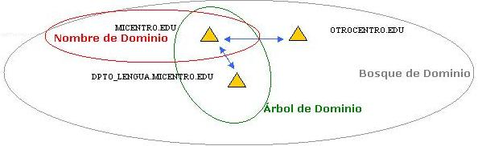

¿Qué es el Directorio Activo?
es la pieza clave del sistema operativo Windows Server
proporciona la capacidad de establecer un único inicio de sesión y un repositorio
central de información para toda su infraestructura
Terminología a conocer:
Controlador de Dominio.
Es un equipo Windows Server con Active Directory instalado que
almacena, mantiene y gestiona la base de datos de usuarios y recursos de la red.
Nombre de Dominio.
Son las denominaciones asignadas a los equipos de la red. Por ejemplo
MICENTRO.EDU
Árbol de Dominio.
Es el conjunto de dominios formado por el
nombre de dominio raíz (MICENTRO.EDU) y el resto de dominios cuyos
nombres constituyen un espacio contiguo con el nombre raíz (por ejemplo
DPTO_LENGUA.MICENTRO.EDU).
Bosque de Árboles de Dominios.
Es el conjunto de árboles de
dominio que no constituyen un espacio de nombres contiguo (por ejemplo
MICENTRO.EDU y OTROCENTRO.EDU, que están conectados en la misma red).
Esquema.
